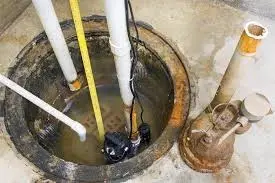
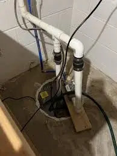

Sump Pump services in San Diego
At EZ Heat and Air, we are proud to be a trusted service provider in San Diego. Our skilled professionals have assisted many homeowners and businesses in maintaining their sump pumps and plumbing systems.
With modern tools and the newest technology, our team is prepared to manage all sorts of sump pump problems, from fixes to full replacements.
Don’t let sump pump issues put your property at risk. Contact EZ Heat and Air now to set up your service. With our knowledge, we will make sure your sump pump runs well, keeping your property dry and safe.
Sump Pump Maintenance and Repair Services in San Diego
Pump Motor Repairs
If your sump pump motor isn’t working efficiently or has stopped functioning, our San Diego sump pump repair experts will diagnose and fix the issue promptly.
Float Switch Replacement
A malfunctioning float switch can prevent your sump pump from activating or shutting off, leading to potential flooding. Our San Diego technicians specialize in repairing or replacing float switches.
Discharge Line Repairs
Clogged or leaking discharge lines can severely impact sump pump performance. Our team in San Diego provides professional discharge line repairs, clearing blockages and fixing leaks.
Battery Backup System Repair
A reliable battery backup system is crucial for keeping your sump pump running during power outages. In San Diego, we offer expert repair and replacement services for backup systems.
Professional Sump Pump Installation Services in San Diego

Sump Pump Installation Services: A professionally installed sump pump is the first line of defense against flooding. Our skilled technicians assess your property’s unique needs and recommend the best sump pump solution.
Routine Maintenance for Long-Lasting Performance: Like any other essential home system, sump pumps require regular maintenance. Our team at EZ Heat and Air provides thorough inspections and maintenance services.

FREE
Estimate
Request a quote and get a free estimate for installation, repair, and replacement services from professionals

FREE
Service Call
From plumbing repairs to full replacements, connect with our experts to inquire about services at zero charges

15%
Discount Available
15% Off to the Police, Military, Fire Seniors and Teachers for Services up to $1000.

FINANCING
Available
Overcome financial barriers and keep your plumbing system up to date with our alternative financing options.

24/7
Service
Same-day Plumbing Service For Any Issue Or Concern Related To Leakage, Clogging, Or Malfunctioning Of Appliances.
Don't Let Plumbing Issues Interrupt Your Comfort & Budget
CALL EXPERTS NOW
 (760) 392 7616
(760) 392 7616
What Our Clients Say About Us

"Highly recommend them for all HVAC needs! Their team is quick, professional, and thorough."
Sarah M. - San Diego
"Excellent service! I called for maintenance and their technician arrived right on time."
John L. - Riverside
Your Trusted Partner for Sump Pump Services
At EZ Heat and Air, we prioritize customer satisfaction above all else. Our licensed and certified technicians are dedicated to providing high-quality services tailored to your needs. With our prompt response times, transparent pricing, and commitment to excellence.
Don’t let water damage compromise your home’s safety and comfort. Trust EZ Heat and Air for dependable sump pump installation, maintenance, and repair services. Call us today to schedule an appointment.

FAQs
Common signs include strange noises, frequent cycling, failure to start, or water not being pumped out effectively. If you notice these issues, it’s time for an inspection.
It’s recommended to have your sump pump serviced annually. Regular maintenance checks ensure components are working properly and extend the pump’s lifespan.